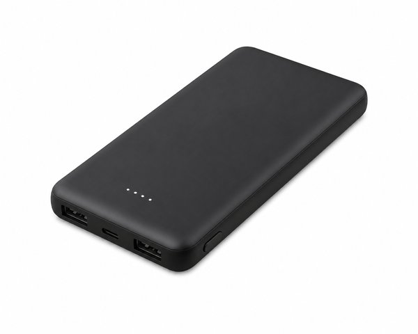
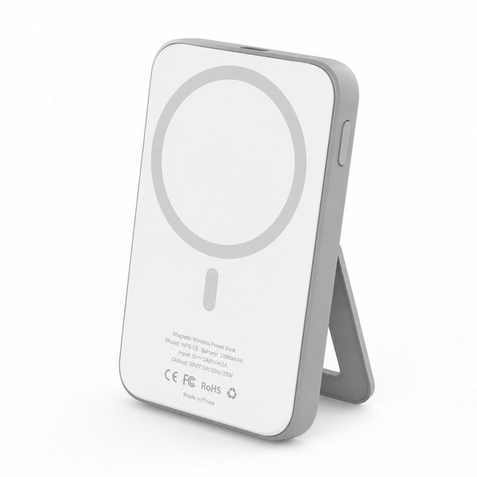
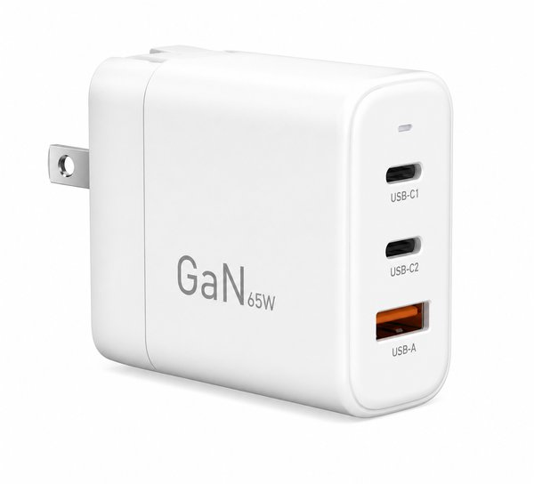
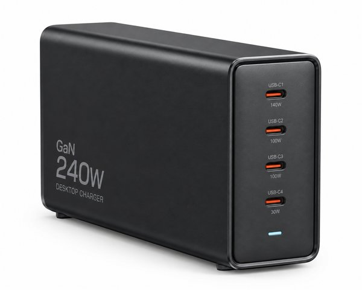
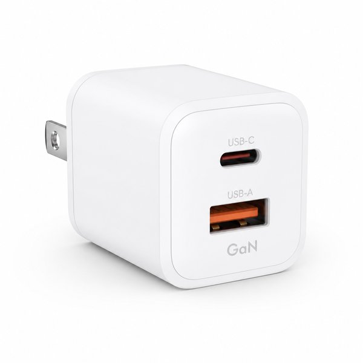
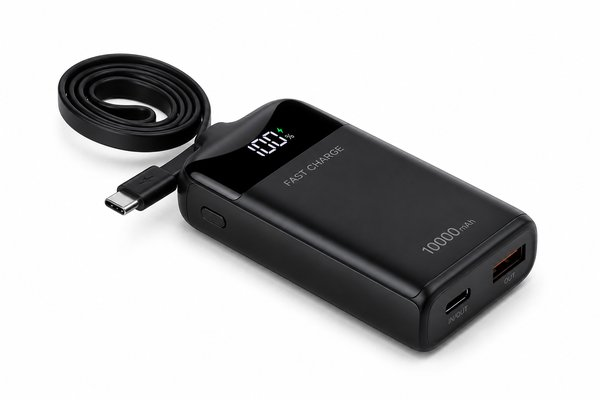
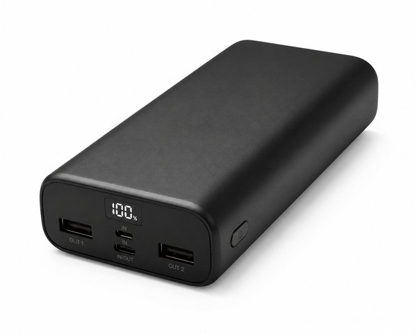
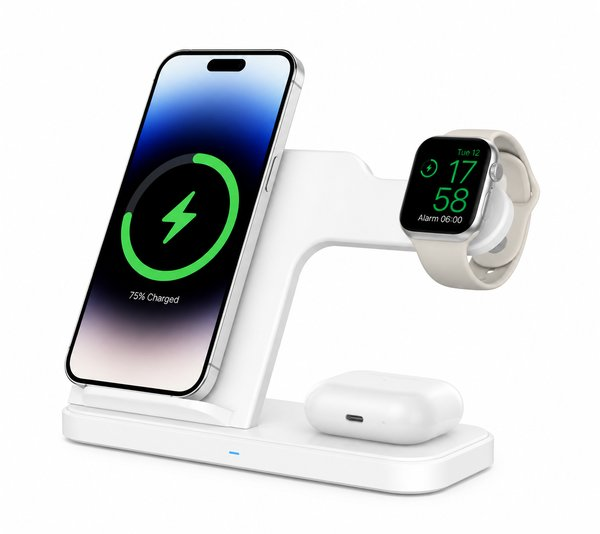
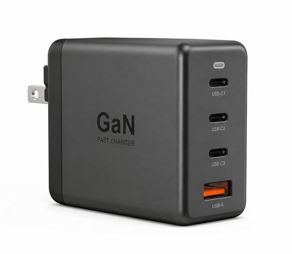
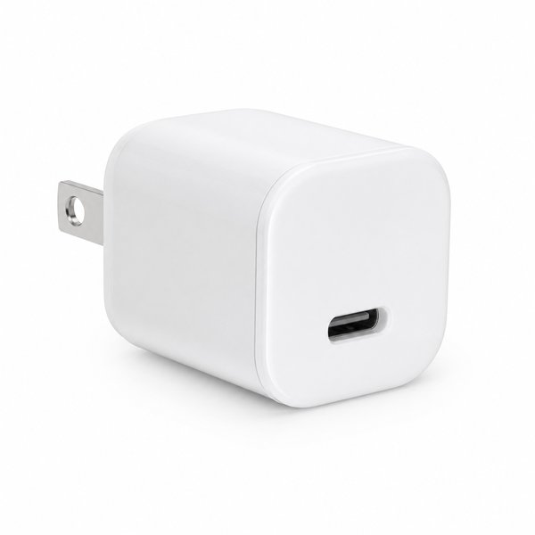

【2026年最新】ブラックフライデーで狙うべき神モバイルバッテリー＆GaN急速充電器10選｜Anker・CIOほか
スマホもタブレットもノートPCも、持ち歩く機器が増えるほど「充電」が一日の区切りを左右します。朝は満タンだったのに夕方には赤いバッテリー表示、という日が続くと、どこかで予定が狂ってしまうものです。
そして11月下旬のブラックフライデーは、充電まわりのガジェットが一年でいちばん安く出る時期でもあります。定価の2〜3割引きは当たり前、型落ちの上位モデルが狙い目になるのもこの季節です。
本記事では、毎日かばんに入れて「これがなかったら一日が回らない」と感じたモバイルバッテリー＆GaN急速充電器の神アイテム10選を、写真付きで紹介します。
- おすすめ10選 スペック・特徴比較表
- BEST 1｜PowerCore 10000 モバイルバッテリー 10,000mAh
- BEST 2｜MagGo Power Bank 10K Qi2対応 ワイヤレスモバイルバッテリー
- BEST 3｜735 Charger GaN II 65W 3ポート急速充電器
- BEST 4｜737 Charger GaNPrime 120W 4ポート充電器
- BEST 5｜NovaPort DUO 45W 2ポート充電器
- BEST 6｜SmartCoby Pro ケーブル一体型 10,000mAh モバイルバッテリー
- BEST 7｜PowerCore 20000 モバイルバッテリー 20,000mAh 大容量
- BEST 8｜BoostCharge Pro 3-in-1 ワイヤレス充電器 MagSafe対応
- BEST 9｜Nexode 100W 4ポート GaN充電器
- BEST 10｜511 Charger Nano 3 30W 急速充電器
- 【読者限定】無料体験キャンペーン
- まとめ：生活をラクにする最初の一歩
| 順位 | 商品名 | ブランド | 最大の特徴・おすすめ理由 | 総合評価 |
|---|---|---|---|---|
| BEST 1 | PowerCore 10000 モバイルバッテリー 10,000mAh | Anker（アンカー） | 約210gの軽量ボディで、毎日持ち歩いても負担にならない | 4.8 ★ |
| BEST 2 | MagGo Power Bank 10K Qi2対応 ワイヤレスモバイルバッテリー | Anker（アンカー） | Qi2規格の15Wワイヤレス充電で、ケーブルを取り出す手間がない | 4.7 ★ |
| BEST 3 | 735 Charger GaN II 65W 3ポート急速充電器 | Anker（アンカー） | 65W出力でノートPCもスマホも1台に集約できる | 4.9 ★ |
| BEST 4 | 737 Charger GaNPrime 120W 4ポート充電器 | Anker（アンカー） | 120W総出力で16インチクラスのノートPCも急速充電できる | 4.8 ★ |
| BEST 5 | NovaPort DUO 45W 2ポート充電器 | CIO（シーアイオー） | 45W出力でスマホの急速充電もタブレットも対応できる | 4.7 ★ |
| BEST 6 | SmartCoby Pro ケーブル一体型 10,000mAh モバイルバッテリー | CIO（シーアイオー） | ケーブル一体型で、充電ケーブルを忘れる心配がない | 4.8 ★ |
| BEST 7 | PowerCore 20000 モバイルバッテリー 20,000mAh 大容量 | Anker（アンカー） | 20,000mAhでスマホ約4回分の余裕ある容量 | 4.7 ★ |
| BEST 8 | BoostCharge Pro 3-in-1 ワイヤレス充電器 MagSafe対応 | Belkin（ベルキン） | iPhone・Watch・AirPodsを同時に置くだけで充電できる | 4.6 ★ |
| BEST 9 | Nexode 100W 4ポート GaN充電器 | UGREEN（ユーグリーン） | 100W出力でノートPCも急速充電できる | 4.6 ★ |
| BEST 10 | 511 Charger Nano 3 30W 急速充電器 | Anker（アンカー） | 30W出力でiPhoneを短時間でしっかり充電できる | 4.8 ★ |
PowerCore 10000 モバイルバッテリー 10,000mAh

手のひらサイズに10,000mAhを収めた、軽量モバイルバッテリーの定番です。iPhoneなら約2回、Androidなら約1.5回フル充電でき、重さは約210g。ケーブルを1本足すだけで、旅行のサブ機から防災用の備えまで兼ねられます。
- 約210gの軽量ボディで、毎日持ち歩いても負担にならない
- 10,000mAhでスマホを約2回フル充電できる容量
- Anker独自の安全設計で発熱・過充電をしっかり抑制
- 最大出力20Wなので、ノートPCの充電には向かない
MagGo Power Bank 10K Qi2対応 ワイヤレスモバイルバッテリー

MagSafe対応のiPhoneにピタッと吸着するQi2規格のワイヤレスバッテリーです。ケーブルを出さずに15Wで充電でき、背面のスタンドを立てれば置いたまま動画も見られます。10,000mAhあるので、出先の一日をかなり余裕を持って支えてくれます。
- Qi2規格の15Wワイヤレス充電で、ケーブルを取り出す手間がない
- 折りたたみスタンド付きで、充電しながら動画視聴ができる
- 10,000mAhの容量で旅行や出張の一日をカバーできる
- 厚みがあるため、薄型ケースだと装着感がやや窮屈になる
735 Charger GaN II 65W 3ポート急速充電器

ノートPCもスマホも、これ1台でまかなえる65W出力のGaN充電器です。USB-Cが2口、USB-Aが1口の3ポート構成で、出張やカフェ作業のかばんが一気に軽くなります。手のひらに収まるサイズなのに、13インチクラスのノートPCならフルスピードで充電できます。
- 65W出力でノートPCもスマホも1台に集約できる
- 3ポート搭載で、同時に複数機器を充電できる
- GaN採用で純正アダプタより小さく、かさばらない
- 3ポート同時使用時は合計出力が配分され、単体より遅くなる
737 Charger GaNPrime 120W 4ポート充電器

120W総出力で、16インチクラスのノートPCまでフルスピード充電できる最上位モデルです。4ポートあり、家族で旅行するときもコンセントの取り合いになりません。GaNPrime技術で従来比約35%の小型化を実現していて、この出力にしては驚くほど軽いのが特徴です。
- 120W総出力で16インチクラスのノートPCも急速充電できる
- 4ポート同時使用でも出力を自動で最適配分してくれる
- GaNPrime技術で大出力ながら持ち運べるサイズに収まっている
- 1万円前後と価格は高めで、スマホ専用ならオーバースペック
NovaPort DUO 45W 2ポート充電器

45W出力ながら、純正アダプタより小さい極小サイズを実現したGaN充電器です。2ポートあり、スマホの急速充電とタブレットの充電を同時にこなせます。コンセントの隣を塞ぎにくい形状で、電源タップが混み合うデスク周りでもストレスがありません。
- 45W出力でスマホの急速充電もタブレットも対応できる
- 純正アダプタより小さい超コンパクト設計
- 独自の安全回路で発熱を抑え、長時間でも安心
- ノートPCによっては45Wでは充電速度が落ちる
SmartCoby Pro ケーブル一体型 10,000mAh モバイルバッテリー

本体にケーブルが組み込まれた、ケーブル忘れと無縁のモバイルバッテリーです。10,000mAhで最大30W出力に対応し、スマホの急速充電ができます。残量が数字で表示されるので、出かける前に「あと何回充電できるか」がひと目で分かるのも地味に便利です。
- ケーブル一体型で、充電ケーブルを忘れる心配がない
- 10,000mAh＋最大30W出力でスマホを急速充電できる
- 残量が数字で表示され、持ち出す前の判断がしやすい
- 一体型ケーブルが断線すると本体の使い勝手が落ちる
PowerCore 20000 モバイルバッテリー 20,000mAh 大容量

スマホを約4回フル充電できる20,000mAhの大容量モデルです。2台同時に充電でき、旅行・出張・キャンプ・防災と、 「一日中コンセントにありつけない」 場面で本領を発揮します。普段は家の引き出しに入れておき、いざという日に満充電で待機させておく使い方が現実的です。
- 20,000mAhでスマホ約4回分の余裕ある容量
- 2台同時充電に対応し、家族で分け合える
- 停電や災害時の備えとして1台あると安心
- 約350gあり、毎日持ち歩くには重い
BoostCharge Pro 3-in-1 ワイヤレス充電器 MagSafe対応

iPhone・Apple Watch・AirPodsを、1台の上に置くだけで同時に充電できる3-in-1充電器です。デスクにケーブルが3本這う状態から解放され、寝る前に3台をまとめて置くだけで朝には全部満タンになります。MagSafe対応で15Wのワイヤレス充電ができます。
- iPhone・Watch・AirPodsを同時に置くだけで充電できる
- ケーブルが1本で済み、デスク上がすっきり片付く
- MagSafe対応の15Wワイヤレス充電に対応
- 2万円前後と価格が高め
- 専用の電源アダプタが必要
Nexode 100W 4ポート GaN充電器

100W出力と4ポートを、この価格でまとめてきたコスパ重視のGaN充電器です。ノートPCとスマホ、イヤホン、モバイルバッテリーを一晩でまとめて充電できます。プラグが折りたためるので、かばんに入れても他の機器を傷つけにくいのも助かります。
- 100W出力でノートPCも急速充電できる
- 4ポートあり、家族や複数機器をまとめて充電できる
- 折りたたみプラグで持ち運びやすく、価格も手頃
- ポート数が多いぶん本体はやや大ぶりで重い
511 Charger Nano 3 30W 急速充電器

30W出力でiPhoneを高速充電できる、超小型の単ポート充電器です。付属の5Wアダプタとほぼ同じサイズながら、充電速度は数倍。2,000円前後で買えるので、寝室・リビング・仕事かばん用と、気づいたら家中に増やしてしまうタイプの1台です。
- 30W出力でiPhoneを短時間でしっかり充電できる
- 純正アダプタとほぼ同じサイズで、持ち歩きの邪魔にならない
- 2,000円前後で買える手頃さで、複数買いしやすい
- 1ポートのみなので、複数機器の同時充電には不向き
日々の暮らしや買い物を楽しむなら、人気雑誌1,000誌以上がスマホやタブレットで読み放題の「楽天マガジン」が圧倒的におすすめです！初回31日間は完全無料で、無料期間中に解約すれば料金は1円もかかりません。
＼ 読者負担0円！雑誌1,000誌読み放題 ／楽天マガジン 31日間無料お試しを詳しく見る →
💡 まとめ：生活をラクにする最初の一歩
充電まわりは、買い足すほどかばんが重くなる分野です。だからこそ「スマホ用の小さい1台」と「PCまでまかなえる1台」の2台体制に絞ると、持ち物も出費も最小限で済みます。まずは65WのGaN充電器と10,000mAhの軽量バッテリーから始めて、足りない分だけ後から足すのがいちばん失敗しません。ブラックフライデーは在庫が動くので、欲しい型番を決めてから日を待つのがおすすめです。
楽天市場では「5と0のつく日」や「お買い物マラソン」などのキャンペーンに合わせて購入すると、ポイント還元が最大化してお得に手に入ります。ぜひチェックしてみてくださいね。